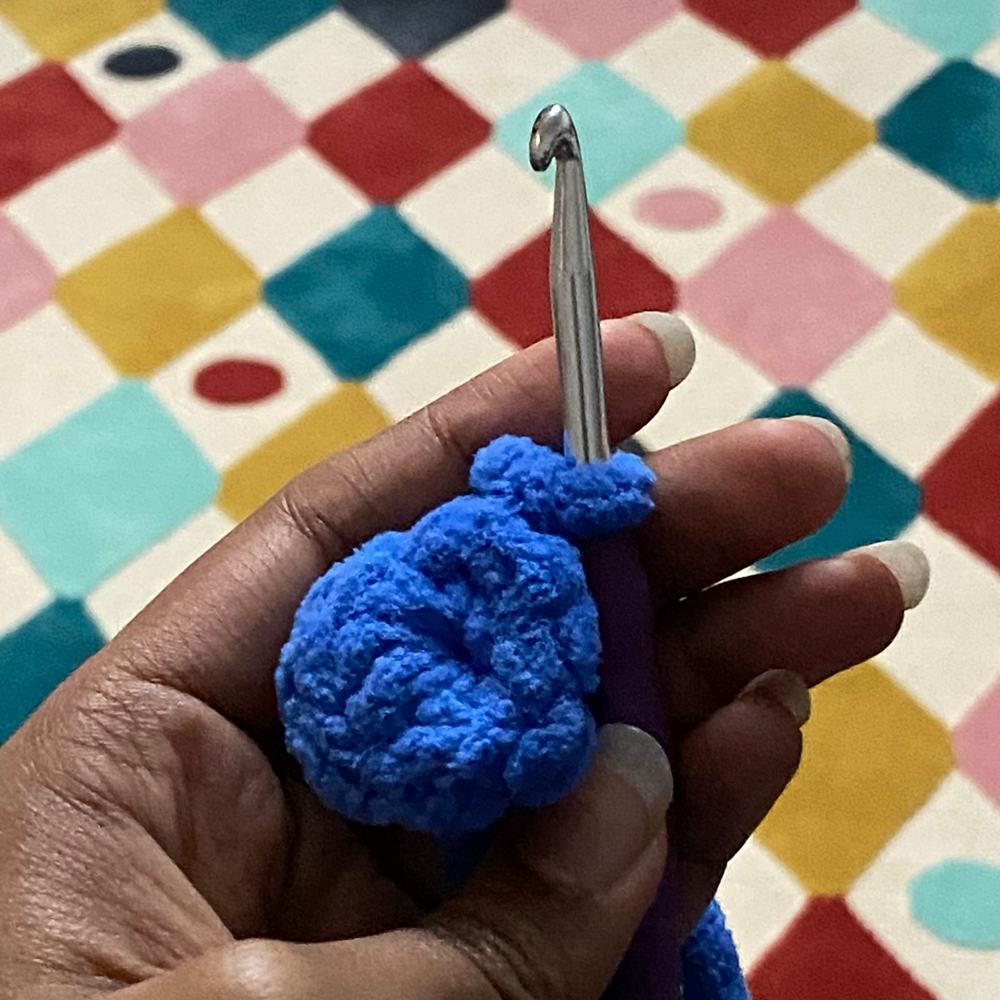

|

|
This is the magic ring, it is apart of the fundementals to start crochet amigurumi.
The method of making the magic ring is:
1. Wrap the yarn around the 3 fingers 2 times so that there is a cross on the palm
2. Take your corchet hoop and put it under the first loop and grab the second and pull it out so theres a circle
3. Chain stitch by making a loop around the crochet hook and pull it through the circle.
4. Continue the chain stich for however many stitches are required
|